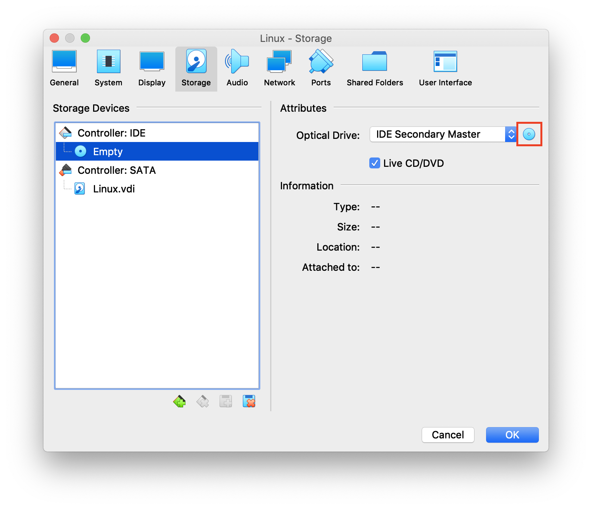
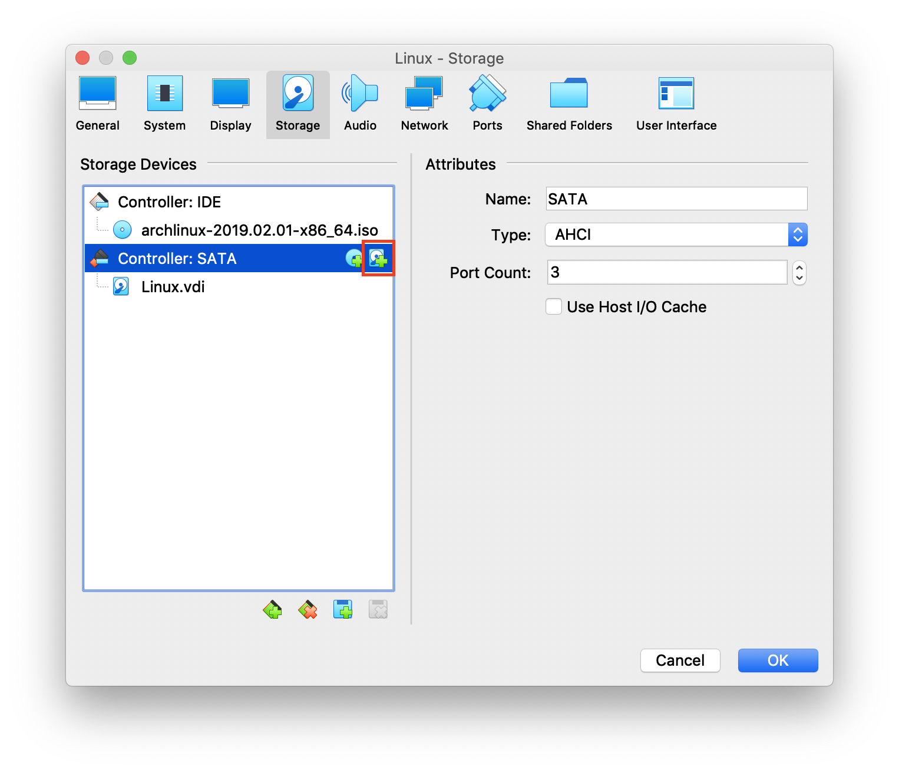
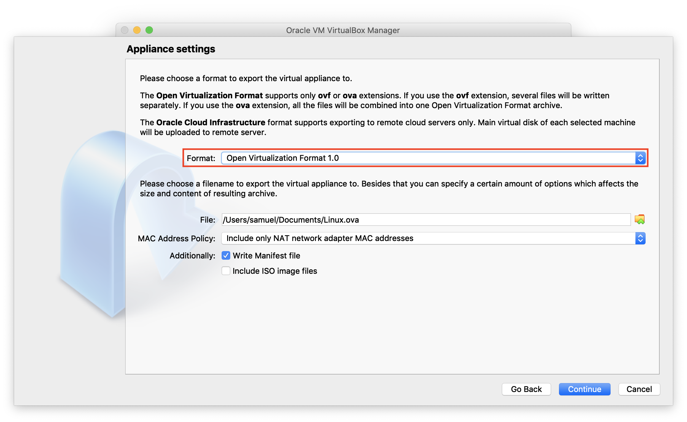
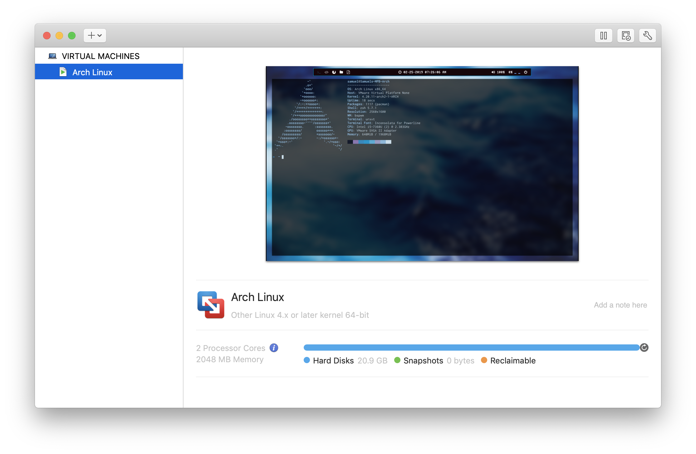

Convert Physical OS to Virtual Machine
以下將以Arch Linux做示範。
如果以「migrate physical machine to virtualbox」之類的詞當作關鍵字去Google，會發現網路上的做法都是請你使用Virtual Box的指令來達成目的：
VBoxManage internalcommands createrawvmdk -filename <path-to-file>.vmdk -rawdisk <disk-location> -partitions <partitions-to-migrate> |
可是在我的電腦上，當我執行此指令時會發生悲劇：
VBoxManage: error: Cannot open the raw disk '/dev/disk0': VERR_ACCESS_DENIED
VBoxManage: error: The raw disk vmdk file was not created
詳細原因我不太清楚，網路上有人說是因為System Integrity Protection(macOS的系統保護機制)是啟動的關係，但是我就算關掉了還是沒有用。
後來我就到網路上查查看有沒有辦法把磁碟映像檔轉成VirtualBox的虛擬碟格式，發現可以用VBoxManage convertfromraw這個指令達成，所以我就想到了一個比較神奇的方法：
首先，先把我要的磁碟分割區dd出來(root和efi分割區)：
dd if=<root-partition> of=~/root.iso bs=2M |
這裡要注意的是dd出來的映像檔大小=分割區大小，所以如果本機磁碟空間不夠可以把這兩個映像檔塞到其他地方。
接著我們要把磁碟映像檔轉成虛擬碟格式：
VBoxManage convertfromraw root.iso root.vdi |
前置作業到此為止
Import root partition
接下來進入了重頭戲。
開啟Virtual Box後建立一個虛擬機，作業系統選擇Linux，然後磁碟大小設定要比原本的那兩個分割區還大。
建立完虛擬機之後到設定裡面新增開機映像檔和剛剛建立的虛擬碟：
 
然後開啟虛擬機，(這裡會使用BIOS Legacy方法開機，因為Virtual Box用UEFI開Arch Linux會黑屏)
輸入fdisk -l查看裝載的磁碟編號，可以根據磁碟大小來判斷。
以我的狀況來看，/dev/sda是剛建立的虛擬碟 /dev/sdb是原先的root.vdi /dev/sdc是efi.vdi。
利用fdisk /dev/sda來分割磁碟，產生一個空間為200MiB和剩下所有空間的分割區(類型為預設的Linux就好，不需要像UEFI那樣設定ef00)。
格式化開機分割區：
mkfs.ext2 /dev/sda1 #boot分割區 |
把原先的root.vdi檔案複製到/dev/sda2。
dd if=/dev/sdb of=/dev/sda2 bs=2M |
裝載磁碟：
mount /dev/sda2 /mnt |
重新產生fstab：
genfstab /mnt -U > /mnt/etc/fstab |
root分割區移植到這裡結束。
Import boot partition
先建立/mnt2資料夾，以便於裝載之前產生的efi.vdi
mkdir /mnt2 |
把efi裡面系統kernel檔案複製出來
cd /mnt2 |
重新安裝BIOS Legacy版本grub
arch-chroot /mnt |
到這裡若系統都沒噴錯誤，就算移植整個系統完成了。
Export VM to VMware (Optional)
因為我習慣用VMware Fusion作為虛擬機軟體，而且Virtual Box效能上較不佳，所以我要把Virtual Box上的虛擬機匯出。
點擊Tab bar上面的File，選取Export Appliance以匯出。這裡要特別注意的是Open Virtualization Format一定要選1.0，2.0我測試過在後面的匯入會出錯。

匯出結束之後，開啟VMware Fusion，選Import an existing virtual machine，然後找到剛剛匯出的.ova檔案，接著按照指示完成匯入就大功告成了！
有圖有真相： 